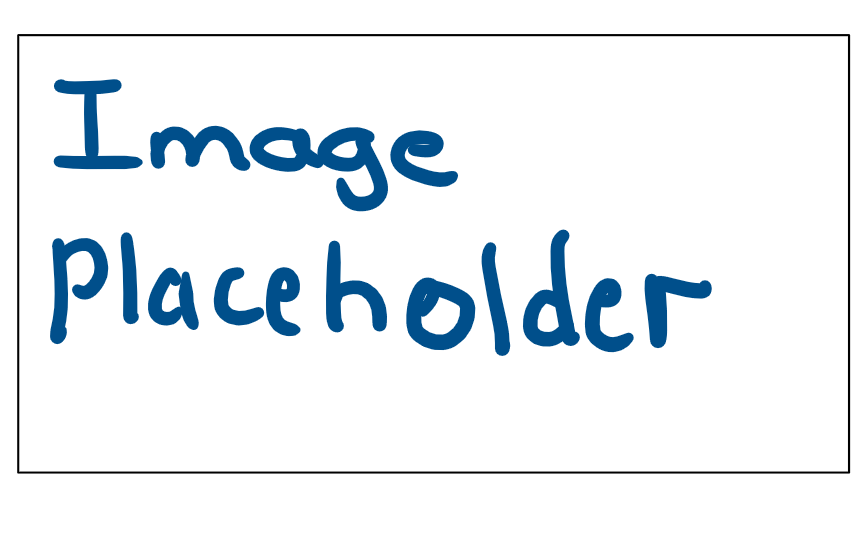

|  |
Reflect on your work for Website 1.
Where have you struggled?
Because I started the course two weeks late, I did struggle a bit to catch-up the workload and manage my time. However, in terms
of the website itself, I struggled with formatting my website (which I know we will cover in more detail when we learn CSS) because
parts of my website rely on correct formatting to get my points across. I think I also struggled at first with understanding HTML (even
though I know a lot about coding), I realized that there was a lot that I had to understand about how the internet works and how websites
operate before I could dive into making my own website. It was super useful however, that once I understood some of the basics, I could
refer to the MDN website for the specfic code i needed on various html elements.
What are you proud of?
I am most proud of the fact that I have challenged myself to include elements on my website that require more coding knowledge to execute it.
For example the draggable elements. Ever since I discovered it, and discovered that there such unique and interesting websites out there, I have
been inspired to be creative. A website does not have to be formal and rigid (depending on the audience and intention of course), but I really love
the fact that I get to experiment with creative ways to encourage user interaction.
What do you want to change going forward?
Going forward, I would definetly like to give more time on a daily basis to work on my website instead of only revisisting it at the end of the week.
In this way, I can be more productive and do more with my website and I have more opportunity and time to be iterative in my process, allowing me to
think more critically through my processes and it would allow me to be more detailed and thorough.
|